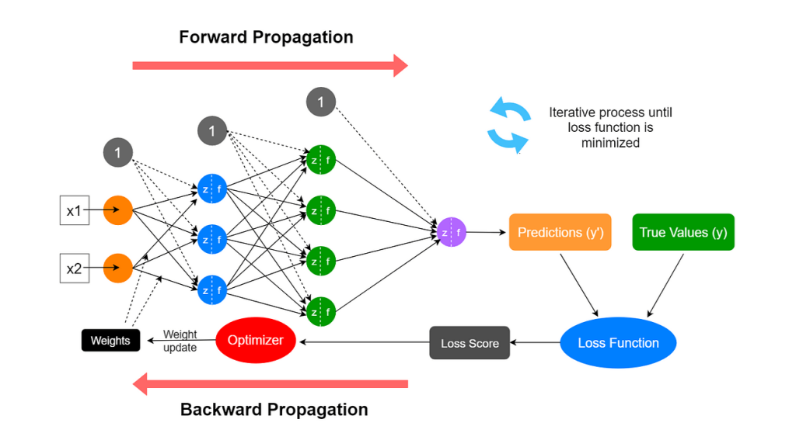
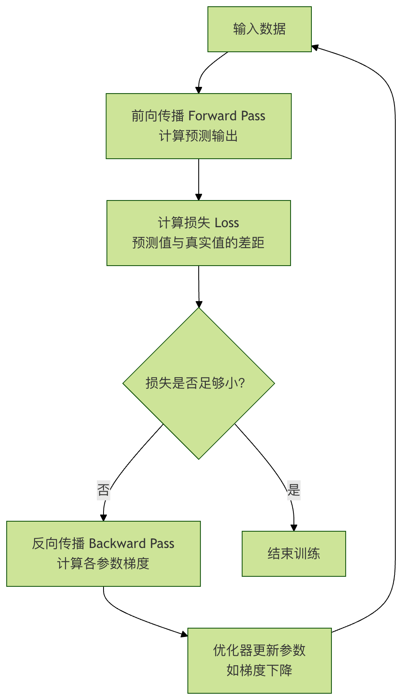

Propagación hacia adelante y propagación hacia atrás
En el aprendizaje profundo, la propagación hacia adelante y la propagación hacia atrás son los dos pilares centrales que sostienen su funcionamiento. Son como las dos caras de una misma moneda; juntas conforman el ciclo completo de la red neuronal, desde el aprendizaje hasta la aplicación. Comprender a fondo estos dos procesos es la primera llave para abrir la puerta del aprendizaje profundo.
Este artículo te guiará paso a paso para desglosar estos dos conceptos aparentemente complejos, con una lógica clara y analogías vívidas, para que no solo sepas cómo funcionan, sino también por qué funcionan así.
¿Qué es la propagación hacia adelante y la propagación hacia atrás?
Antes de profundizar en los detalles, establezcamos primero una comprensión general.
Imagina que estás enseñando a un niño a reconocer gatos y perros. Le muestras una imagen (entrada), él, basándose en el conocimiento que ya tiene en su cerebro (parámetros de la red, es decir, pesos y sesgos) hace un juicio, y luego te dice que esto es un gato (salida). Este proceso de ver la imagen -> procesamiento cerebral -> dar una respuesta esla propagación hacia adelante。
Pero el niño puede equivocarse. Tú le dices: no, esto es un perro. La diferencia entre esta respuesta correcta y la respuesta del niño esel error. El niño debe reflexionar basándose en este error: ¿qué conocimientos (parámetros) de mi cerebro causaron este error de juicio? ¿Cómo debo ajustarlos para que la próxima vez pueda reconocer correctamente? Este proceso de ajustar el conocimiento de atrás hacia adelante según el error esla propagación hacia atrás。
En una red neuronal:
- Propagación hacia adelante: el proceso por el cual los datos van desde la capa de entrada, pasan por la capa oculta, llegan finalmente a la capa de salida y generan un resultado de predicción. Este es un procesode inferencia.
- Propagación hacia atrás: según el error entre el resultado de predicción generado por la propagación hacia adelante y el valor real, comenzando desde la capa de salida, se calcula hacia atrás, capa por capa, la magnitud de la "contribución" de cada parámetro (pesos y sesgos) al error total (es decir, el gradiente), y con base en ello se actualizan los parámetros. Este es un procesode aprendizaje.

Su relación se puede representar con un sencillo diagrama de ciclo de aprendizaje:

Propagación hacia adelante: el camino de inferencia de la red neuronal
La propagación hacia adelante es el canal de avance mediante el cual la red neuronal realiza predicciones. Entendámoslo a través de la red neuronal de tres capas más simple (capa de entrada, una capa oculta y capa de salida).
Conceptos clave y cálculo
Supongamos que queremos predecir el precio de una casa; la entrada es el área de la viviendax. Nuestra red en miniatura tiene la siguiente estructura:
- Capa de entrada: una neurona que recibe
x。 - Capa oculta: una neurona con un peso
w1y un sesgob1。 - Capa de salida: una neurona con un peso
w2y un sesgob2, que produce el precio de la casa previstoy_pred。
El cálculo de la propagación hacia adelante se divide en dos pasos:
1. Cálculo de la capa oculta: la entradaxcon el pesow1y el sesgob1se combinan, y luego pasan por una función de activación (por ejemplo, Sigmoid, denotada comoσ), lo que produce la salida de la capa ocultaa1。
z1 = w1 * x + b1 a1 = σ(z1) = 1 / (1 + exp(-z1))
z1es el resultado de la transformación lineal.a1es la salida después de la activación no lineal, lo que otorga a la red la capacidad de aprender patrones complejos.
2. Cálculo de la capa de salida: la salida de la capa ocultaa1, como entrada, junto con el peso de la capa de salidaw2y el sesgob2se combinan para producir la predicción finaly_pred. Aquí, para simplificar, se supone que la capa de salida no utiliza una función de activación (es decir, salida lineal).
y_pred = w2 * a1 + b2
Ejemplo de código: implementación manual de la propagación hacia adelante
Ejemplo
def sigmoid(x):
"""Sigmoid激活函数"""
return 1 / (1 + np.exp(-x))
# 初始化网络参数（通常随机初始化，这里为演示指定值）
w1, b1 = 2.0, -1.0 # 隐藏层参数
w2, b2 = 1.5, 0.5 # 输出层参数
def forward_pass(x):
"""执行一次前向传播"""
# 隐藏层计算
z1 = w1 * x + b1
a1 = sigmoid(z1) # 应用激活函数
# 输出层计算
y_pred = w2 * a1 + b2 # 线性输出
# 返回中间结果和最终预测，便于后续理解
return {'z1': z1, 'a1': a1, 'y_pred': y_pred}
# 假设房屋面积为 3（单位：百平方米）
x_input = 3.0
result = forward_pass(x_input)
print(f"输入 x = {x_input}")
print(f"隐藏层线性输出 z1 = w1*x + b1 = {result['z1']:.4f}")
print(f"隐藏层激活输出 a1 = sigmoid(z1) = {result['a1']:.4f}")
print(f"最终预测房价 y_pred = w2*a1 + b2 = {result['y_pred']:.4f}")
Salida de ejemplo:
输入 x = 3.0 隐藏层线性输出 z1 = w1*x + b1 = 5.0000 隐藏层激活输出 a1 = sigmoid(z1) = 0.9933 最终预测房价 y_pred = w2*a1 + b2 = 1.9899
Estey_predes el precio predicho por la red para una casa de área 3. Pero es evidente que este valor predicho (basado en parámetros que establecimos al azar) probablemente dista mucho del precio real. ¿Cómo medir esta diferencia y mejorarla? Para ello se necesitala función de pérdiday la siguientepropagación hacia atrás。
Función de pérdida: la medida de lo bueno y lo malo
Antes de que comience la propagación hacia atrás, primero debemos cuantificar la brecha entre el valor predichoy_predy el valor realy_true. Esa es la función de la función de pérdida.
Funciones de pérdida comunes：
- Error cuadrático medio: adecuado para problemas de regresión (como predecir el precio de una casa, la temperatura).
Loss = (1/N) * Σ (y_true - y_pred)^2 - Pérdida de entropía cruzada: adecuada para problemas de clasificación (como clasificación de imágenes, detección de correo no deseado).
Tomando el error cuadrático medio como ejemplo, para una sola muestra:
Loss = (y_true - y_pred)^2
Nuestro objetivo es ajustarw1, b1, w2, b2, de modo que esteLossvalor sea lo más pequeño posible.
Propagación hacia atrás: el motor de aprendizaje de la red neuronal
La propagación hacia atrás es el núcleo del algoritmo de aprendizaje del aprendizaje profundo. Su esencia esla regla de la cadenaaplicada eficientemente en redes neuronales. El objetivo es calcularLla derivada parcial (gradiente) de la función de pérdida con respecto a cada parámetro (w1, b1, w2, b2), es decir,etc.∂L/∂w1, ∂L/∂b1Estos gradientes indican la dirección y la magnitud en que cada parámetro debe ajustarse para reducir la pérdida.
Entendiendo el gradiente: la dirección y el tamaño del paso al bajar la montaña
Imagina que estás de pie en una montaña con los ojos vendados (superficie de pérdida) y tu objetivo es encontrar el punto más bajo del valle (pérdida mínima). Antes de dar cada paso, necesitas usar tus pies para sentir la dirección de descenso más pronunciada a tu alrededor. Esa dirección de descenso más pronunciada es elgradiente. La propagación hacia atrás te ayuda a calcular con precisión el gradiente en cada punto bajo tus pies (correspondiente a cada conjunto de parámetros).
Pasos de cálculo de la propagación hacia atrás (regla de la cadena)
Continuamos usando la red en miniatura anterior y suponemos que el precio real de la casa esy_true = 2.5, y que la función de pérdida es el error cuadrático medioL = (y_true - y_pred)^2。
La propagación hacia atrás comienza desde la capa de salida,en sentido inversoy calcula los gradientes capa por capa:
Calcular los gradientes de los parámetros de la capa de salida
- El gradiente de la pérdida
Lcon respecto al valor predichoy_pred:∂L/∂y_pred = -2 * (y_true - y_pred) - Como
y_pred = w2 * a1 + b2, entonces:∂L/∂w2 = (∂L/∂y_pred) * (∂y_pred/∂w2) = (∂L/∂y_pred) * a1∂L/∂b2 = (∂L/∂y_pred) * (∂y_pred/∂b2) = (∂L/∂y_pred) * 1
Calcular los gradientes de los parámetros de la capa oculta
- Primero, necesitamos el gradiente de la pérdida
Lcon respecto a la salida de la capa ocultaa1.a1A través dey_predinfluye enL：∂L/∂a1 = (∂L/∂y_pred) * (∂y_pred/∂a1) = (∂L/∂y_pred) * w2 - Luego,
a1 = σ(z1), la derivada de la función Sigmoidσ'(z) = σ(z)*(1-σ(z))。 - Finalmente, calculamos el gradiente de la pérdida
Lcon respecto a los parámetros de la capa ocultaw1,b1:∂L/∂w1 = (∂L/∂a1) * (∂a1/∂z1) * (∂z1/∂w1) = (∂L/∂a1) * σ'(z1) * x∂L/∂b1 = (∂L/∂a1) * (∂a1/∂z1) * (∂z1/∂b1) = (∂L/∂a1) * σ'(z1) * 1
Ejemplo de código: implementación manual de la propagación hacia atrás
Ejemplo
y_true = 2.5
y_pred = result['y_pred']
a1 = result['a1']
z1 = result['z1']
x = x_input
print(f"真实值 y_true = {y_true}")
print(f"预测值 y_pred = {y_pred:.4f}")
print(f"初始损失 Loss = {(y_true - y_pred)**2:.4f}")
print("\n--- 开始反向传播计算梯度 ---")
# 1. 计算损失对y_pred的梯度
dL_dy_pred = -2 * (y_true - y_pred)
print(f"梯度 ∂L/∂y_pred = -2*(y_true - y_pred) = {dL_dy_pred:.4f}")
# 2. 计算输出层参数 w2, b2 的梯度
dL_dw2 = dL_dy_pred * a1
dL_db2 = dL_dy_pred * 1
print(f"Gradiente ∂L/∂w2 = (∂L/∂y_pred) * a1 = {dL_dw2:.4f}")
print(f"Gradiente ∂L/∂b2 = (∂L/∂y_pred) * 1 = {dL_db2:.4f}")
# 3. Calcular el gradiente de la pérdida con respecto a la salida de la capa oculta a1
dL_da1 = dL_dy_pred * w2
print(f"Gradiente ∂L/∂a1 = (∂L/∂y_pred) * w2 = {dL_da1:.4f}")
# 4. Calcular el valor de la derivada de la función Sigmoid en z1
def sigmoid_derivative(x):
"""Derivada de la función Sigmoid"""
s = sigmoid(x)
return s * (1 - s)
sigma_prime_z1 = sigmoid_derivative(z1)
print(f"Derivada de Sigmoid σ'(z1) = σ(z1)*(1-σ(z1)) = {sigma_prime_z1:.4f}")
# 5. Calcular los gradientes de los parámetros de la capa oculta w1, b1
dL_dw1 = dL_da1 * sigma_prime_z1 * x
dL_db1 = dL_da1 * sigma_prime_z1 * 1
print(f"Gradiente ∂L/∂w1 = (∂L/∂a1) * σ'(z1) * x = {dL_dw1:.4f}")
print(f"Gradiente ∂L/∂b1 = (∂L/∂a1) * σ'(z1) * 1 = {dL_db1:.4f}")
Salida de ejemplo:
真实值 y_true = 2.5 预测值 y_pred = 1.9899 初始损失 Loss = 0.2602 --- 开始反向传播计算梯度 --- 梯度 ∂L/∂y_pred = -2*(y_true - y_pred) = -1.0202 梯度 ∂L/∂w2 = (∂L/∂y_pred) * a1 = -1.0134 梯度 ∂L/∂b2 = (∂L/∂y_pred) * 1 = -1.0202 梯度 ∂L/∂a1 = (∂L/∂y_pred) * w2 = -1.5303 Sigmoid导数 σ'(z1) = σ(z1)*(1-σ(z1)) = 0.0066 梯度 ∂L/∂w1 = (∂L/∂a1) * σ'(z1) * x = -0.0304 梯度 ∂L/∂b1 = (∂L/∂a1) * σ'(z1) * 1 = -0.0101
Ahora tenemos los gradientes de todos los parámetros. Estos valores negativos significan que siaumentamoslos valores de estos parámetros, la pérdidaaumentará(porque la dirección del gradiente es de ascenso). Para reducir la pérdida, deberíamosa lo largo de la dirección opuesta al gradienteajustar los parámetros.
Actualización de parámetros: descenso de gradiente
Una vez obtenidos los gradientes, usamosdescenso de gradientepara actualizar los parámetros:
参数 = 参数 - 学习率 * 该参数的梯度
Donde,la tasa de aprendizajees un hiperparámetro muy importante que controla el tamaño del paso en cada actualización de parámetros. Si el paso es demasiado pequeño, el aprendizaje es lento; si es demasiado grande, puede no converger o incluso divergir.
Ejemplo de código: aplicar el descenso de gradiente para actualizar los parámetros
Ejemplo
# Actualizar parámetros
w1_new = w1 - learning_rate * dL_dw1
b1_new = b1 - learning_rate * dL_db1
w2_new = w2 - learning_rate * dL_dw2
b2_new = b2 - learning_rate * dL_db2
print("--- Parámetros actualizados ---")
print(f"w1: {w1:.4f} -> {w1_new:.4f}")
print(f"b1: {b1:.4f} -> {b1_new:.4f}")
print(f"w2: {w2:.4f} -> {w2_new:.4f}")
print(f"b2: {b2:.4f} -> {b2_new:.4f}")
# Hacer una propagación hacia adelante con los nuevos parámetros para verificar si la pérdida disminuyó
def forward_pass_with_params(x, w1, b1, w2, b2):
z1 = w1 * x + b1
a1 = sigmoid(z1)
y_pred = w2 * a1 + b2
return y_pred
y_pred_new = forward_pass_with_params(x_input, w1_new, b1_new, w2_new, b2_new)
loss_new = (y_true - y_pred_new)**2
print(f"\n"Predicción con nuevos parámetros: y_pred_new = {y_pred_new:.4f}")
print(f"Nueva pérdida New Loss = {loss_new:.4f}")
print(f"Cambio de pérdida: {loss_new - (y_true-y_pred)**2:.4f} (negativo indica que la pérdida disminuyó)")
Salida de ejemplo:
--- 更新后的参数 --- w1: 2.0000 -> 2.0030 b1: -1.0000 -> -0.9990 w2: 1.5000 -> 1.6013 b2: 0.5000 -> 0.6020 用新参数预测: y_pred_new = 2.1933 更新后的损失 New Loss = 0.0940 损失变化: -0.1662 (负值表示损失减小)
¡Excelente! Después de unpropagación hacia adelante -> cálculo de pérdida -> propagación hacia atrás -> actualización por descenso de gradientede ciclo completo, nuestro valor de prediccióny_pred 从 1.99está más cerca del valor real2.5, y la pérdida también0.260disminuyó de0.094. Al repetir este ciclo miles de veces (sobre grandes cantidades de datos), la red neuronal puede aprender parámetros efectivos y hacer predicciones precisas.
Ejercicio práctico: consolida tu comprensión
Ahora es el momento de poner manos a la obra y consolidar lo aprendido.
Ejercicio 1: Expandir la redModifica el código anterior para aumentar a 2 neuronas en la capa oculta. Debes inicializarw1como un arreglo de forma(2,)(dos pesos),b1 为 (2,)de arreglo. Ajusta en consecuencia los cálculos de la propagación hacia adelante y hacia atrás. Observa cómo cambia la capacidad de la red.
Ejercicio 2: Cambiar la función de activaciónReemplaza la función de activación Sigmoid por la función ReLU (f(x) = max(0, x)). Necesitas volver a derivar e implementar la derivada de ReLU (f'(x) = 1 if x>0 else 0). Compara cómo difiere el proceso de entrenamiento al usar diferentes funciones de activación.
Ejercicio 3: Implementar un bucle de entrenamientoEscribe un bucle de entrenamiento completo, en un conjunto de datos simple (por ejemplo, construido por ti mismoy = 2x + 1 + 噪声) y entrena una micro-red para ajustarlo. Configura el número de épocas, imprime la pérdida después de cada iteración y observa si la pérdida sigue disminuyendo durante el entrenamiento.
Ejercicio 4: Comprender el efecto de la tasa de aprendizajeBasándote en el Ejercicio 3, prueba diferenteslearning_rate(por ejemplo, 0.01, 0.1, 0.5, 1.0). Observa cómo cambia la curva de pérdida cuando la tasa de aprendizaje es demasiado grande o demasiado pequeña (si oscila, diverge o converge lentamente), y comprende profundamente la importancia de la tasa de aprendizaje como tamaño de paso.
Resumen
La propagación hacia adelante y la propagación hacia atrás son la dinámica central del aprendizaje en las redes neuronales:
- Propagación hacia adelante是ruta de inferencia: utiliza los parámetros actuales para mapear la entrada a la salida y calcula la puntuación (pérdida) del rendimiento actual.
- Propagación hacia atrás是algoritmo de aprendizaje: utiliza la regla de la cadena para calcular eficientemente el gradiente de la función de pérdida con respecto a cada parámetro de la red, indicando la dirección de optimización de los parámetros.
- Descenso de gradiente是estrategia de optimización: según los gradientes proporcionados por la propagación hacia atrás, actualiza realmente los parámetros con la tasa de aprendizaje como tamaño de paso, mejorando gradualmente el rendimiento de la red.
Haz clic para compartir notas
<p style="font-size:14px;">¡La nota debe ser una extensión del contenido de este artículo!</p><br> <p style="font-size:12px;"><a href="../tougao.html" target="_blank">Envía un artículo, haz clic aquí</a></p> <p style="font-size:14px;"><a href="../w3cnote/runoob-user-test-intro.html" target="_blank">Cómo obtener el código de invitación de registro</a></p> <h3 class="text-muted"><i class="fa fa-info-circle" aria-hidden="true"></i> Antes de compartir notas debes <a href=";.html" class="runoob-pop">iniciar sesión</a>!</h3> <p><a href="../w3cnote/runoob-user-test-intro.html" target="_blank">Cómo obtener el código de invitación de registro</a></p>